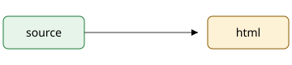

Kitchen sink: every feature at once
Uses every construct, links to the minimal report and shows a pill in the subtitle.
Short answer: it all renders. Directives, figures, tables and a TOC work together, and prose colons like 16:00 stay as written.
- Deterministic output.
- No scripts.
1. Context
Paragraph with a footnote1, strikethrough, inline code and a very long word: Donaudampfschifffahrtsgesellschaftskapitänswitwenrentenversicherungsanstalt, plus https://example.com/a/very/long/url/that/must/wrap/on/phones/without/scrolling/the/page/horizontally.
A blockquote with emphasis.
- done task
- open task
Detail
// A code block that is wider than a phone screen and must scroll inside its own box, not the page.
export function build(source, { file, root, config, themeCss = '', exists = () => false }) { return source; }
2. Findings

| Option | Cost | Verdict |
|---|---|---|
| A: pure browser | 0 € | no-go |
| B: edge function | 5 € | partial |
| C: hybrid | 20 € | go |
Pros
Fast, deterministic, and themeable.
- one file
- no scripts
Cons
One more tool to learn. See findings.
3. Recommendation
Go with option C. :unknown[this stays literal] and :::tdlr typos too.
4. Sources
Footnotes
-
The footnote text. ↩